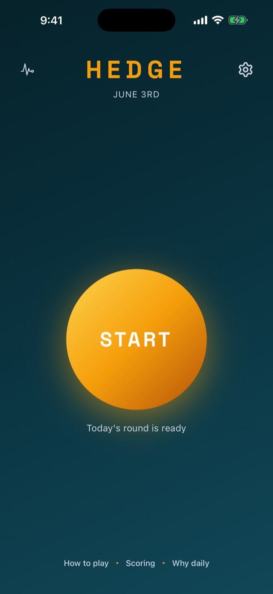
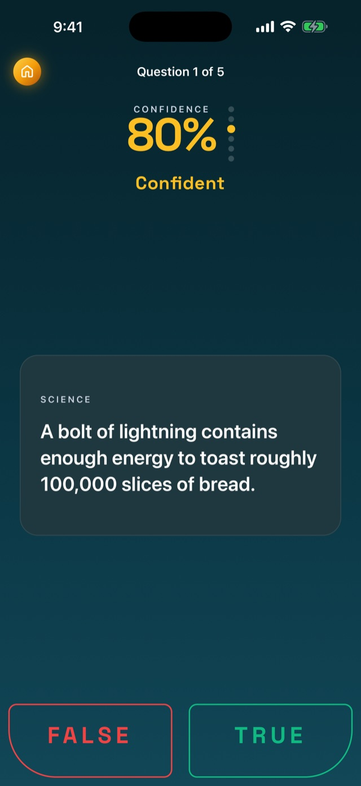
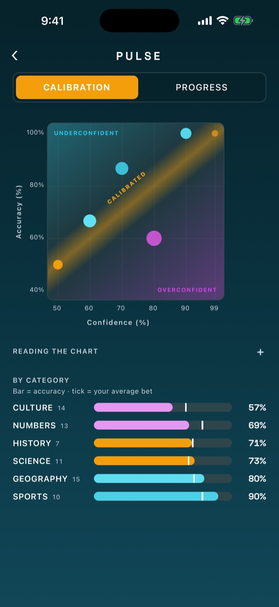

Hedge: How It's Built
A fully on-device iOS calibration game, backed by a self-hosted LLM content pipeline.
Stack: Expo SDK 55 · React Native 0.83 · React 19 · TypeScript · expo-sqlite · Node + Hono · SQLite · Anthropic API
Platform: iOS · Backend for the game: none, fully on-device · Status: Live on the App Store (v1.1.0)



The idea
Most trivia rewards luck and process-of-elimination. Hedge rewards self-knowledge. Every day you get five true/false questions, and for each one you set a confidence level (50, 60, 70, 80, 90, or 99 percent) before locking in.
Scoring is Brier-based: a wrong answer at 99 percent is brutal, a hedge at 50 percent is neutral, and being right is only worth the most if you were also confident. Over many rounds, a per-confidence calibration chart reveals whether you are systematically over- or under-confident, and in which categories. The trivia is the surface. The real product is a personal calibration instrument.
What makes it interesting
This is a small app with a deliberately large amount of system behind it. The parts I am most happy with:
A shared TypeScript core that prevents drift
Three surfaces (the game, an authoring app, and a server) all import one package, @hedge/shared, which owns the canonical types, the Brier scoring function, the SQLite schema and migration ledger, the Zod validators, and the round scheduler. The scoring math and data model are physically impossible to drift between client and server because there is only one copy.
A nice constraint: the database interface is defined structurally to match expo-sqlite's async shape, so the shared package has zero React Native runtime dependency. That lets the test suite wrap better-sqlite3 in the same interface and run pure logic under vitest with no simulator in the loop.
Scoring that protects its own signal
- Brier scores are stored denormalized next to each answer, so calibration queries are single-pass.
- A clean split between the stored raw values (what the calibration math reads) and a display transform (scaled to a friendly 0 to 100), so players never see decimals or the word "Brier" while the underlying signal stays intact.
- A
UNIQUEconstraint onanswers.question_idenforces "once answered, locked, no replays." Removing it would let players retry for a better score and destroy the calibration data, so it is treated as a load-bearing invariant. - Streaks are computed on the fly from completed rounds rather than stored, which removes an entire class of counter-drift bugs.
A self-hosted LLM content pipeline
A year of daily rounds is roughly 1,800 questions, and generated candidates only yield 30 to 50 percent through review. So content is a real system, not a folder of JSON:
- Server-side generation calls Claude with a tightly constrained prompt (unambiguously true/false, sourceable, calibrated for a US audience). Large batches are chunked and the static prompt prefix is prompt-cached, so cost stays low and outputs never truncate against the token ceiling.
- Multi-stage deduplication. An exclusion list blocks exact regeneration, a TF-IDF cosine pass plus a proper-noun entity-overlap pass flags rewordings, and a second "critic" model adjudicates whether two questions are really the same fact. This catches the same fact framed two different ways, which exact-match matching misses entirely.
- A phone-based review app so vetting thousands of questions is a couch task in 30-second bursts instead of a desk marathon. It holds no data of its own and talks to the authoring server over Tailscale with bearer-token auth.
- A balancing scheduler that fills each daily round under real constraints (at most two per category, mixed difficulty, mixed trick direction) and only ever touches future dates.
- One-tap publishing. The server builds the seed file in an isolated git worktree, runs a future-only safety gate that refuses to alter any past date (which would retroactively break players' streaks), and opens a reviewable diff. Merging it ships the content over the air.
Ship content without App Store review
The game delivers new questions through Expo over-the-air updates: a push to main reaches players in about 30 seconds with no re-review. Native builds (new modules, icons) are a separate, deliberate manual step. Getting this right meant learning some sharp edges the hard way, including pinning runtimeVersion after a fingerprint policy silently orphaned older builds from the update stream, and adding path filters so documentation and tooling changes never burn a build minute.
Data-driven theming and "special days"
A composable, dark-first theme system (independent accent, background, and motif layers) sits on top of the base theme. A specific calendar date can also become a special day: a custom theme plus greeting that travels to the game as data in the content file, so a holiday look ships through the same update as questions, with no hardcoded packs and no rebuild. The end-of-round celebration escalates by performance tier, up to a perfect-game finale with confetti cannons firing in sequence from the bottom corners.
Architecture
hedge/
apps/
game/ # Player app, ships to the App Store. Fully on-device.
admin/ # Question-authoring app. Thin HTTP client, never published.
packages/
shared/ # Canonical types, scoring, DB schema, validators, scheduler
services/
admin-server/ # Node + Hono + SQLite authoring backend (self-hosted)- The shipped game has no backend. No accounts, no analytics, no telemetry. Everything is local SQLite. The App Store privacy label is "Data Not Collected," and that is literally true.
- The authoring stack is completely separate from the game bundle, which keeps admin code out of App Review and out of the shipped binary.
Tech stack
| Area | Choice |
|---|---|
| App framework | Expo SDK 55, React Native 0.83, React 19, TypeScript |
| Navigation | expo-router (typed routes) |
| Animation | Reanimated + Gesture Handler; calibration chart hand-drawn with Animated primitives (no Skia dependency by choice) |
| Persistence | expo-sqlite on device; append-only migration ledger in shared |
| Authoring server | Node + Hono + better-sqlite3, self-hosted, reached over Tailscale |
| Generation | Anthropic API + Zod validation, prompt-caching, a critic model for dedup |
| Tooling | pnpm workspaces, vitest, EAS Build + Expo OTA |
Engineering practices
- Pure logic lives in the shared package and is unit-tested with vitest, so the scheduler, dedup similarity, scoring, and publish safety-gate are covered without a simulator.
- Append-only migrations with two ledgers: one shared schema for game and server, one server-only ledger so authoring tables never reach the game database.
- Trunk-based with cost discipline: feature branches, path-filtered CI so only player-facing changes trigger builds, and OTA for everything that does not touch native code.
- Documentation as a first-class artifact: design, scoring, pipeline, admin, and release docs are checked into the repo and kept current with the code.
Status
Live on the App Store as v1.1.0. Roughly 740 verified questions scheduled out several months, generated and vetted through the pipeline above. Single-developer project, end to end: product, data model, scoring design, content tooling, and release engineering.
The calibration and scoring primitives are intentionally factored so they could power a planned sibling app (an active-recall study tool) without touching any of the trivia-specific code.